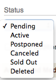
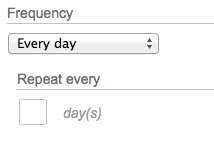
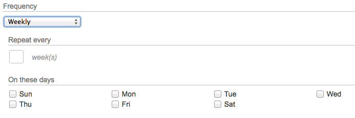
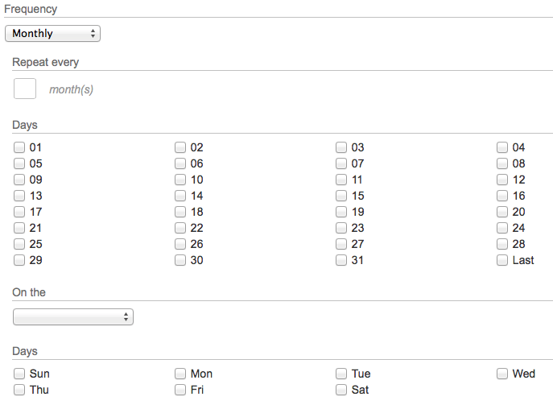
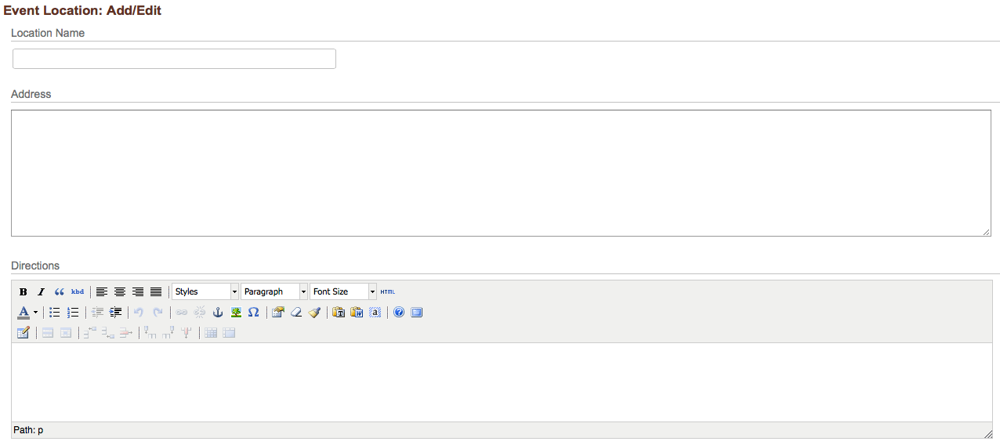
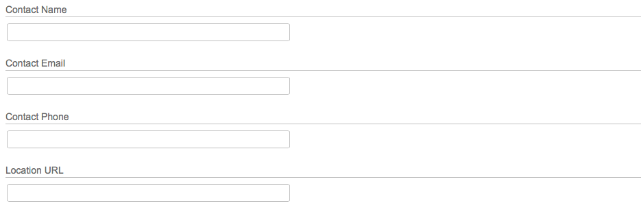

Event Calendar¶
The Event Calendar module is a full-fledged calendar management module. With powerful tools for creating complex recurring events, multiple output formats available (month view, listing, week view, daily, icalendar), and flexible categorization, this module makes it easy to maintain a busy calendar.
Events¶
The building block of the calendar is, of course, the Event. Its basic properties are:
- Start Date/Time
- End Time
- Title
- Organizer
- Description
- Cost
- Location
- Directions
- Contact
- URL
- Notes
- Recurrence Rule
{kind=link}
Because of the time-sensitive nature of calendar events, the listing page always displays events in chronological order, beginning with the next upcoming event. In order to see past events, you will have to use the date picker at the top to select a date in the past.
There are some convenient shortcuts available on this page. You can check one or more boxes on the right side of the listing, and perform operations on more than one event at a time. This is convenient for disabling or deleting multiple events in a single batch.
The “Pending Evens” tab is primarily useful for websites that allow user-submitted calendar events. If you have a website that allows visitors to submit their own calendar events, those events can be configured to automatically have a status of “Pending,” allowing them to be reviewed by an editor prior to being added to the calendar.
The “iCalendar” tab triggers the generation of an icalendar-formatted .ics file on your server. This file contains all of the events in your calendar in an internet-standard format (RFC 5545) that can be read by many other calendar programs (iCal, Outlook, Google Calendar, etc). Normally, this file is automatically generated by a recurring script that runs every 10 minutes.
Creating a new event¶
- To create a new event, click the “New Event” link that appears at the bottom of the event listing page.
- Like most Manifesto content, Calendar Events can tap into the powerful category system, allowing various associations and classifications to be attached to an event. Here we see that the “Base” category group is enabled for Calendar Events, so you can use the same categories for events that are used for photo galleries or blog posts.
{kind=link}
The Title field holds the main identifier for the event, which will appear in most calendar views. Titles can be up to 255 characters long, but bear in mind that in some views, such a long title can render the view illegible. So try to be pithy but descriptive in naming your event.¶
{kind=link}
The Event Date field is the start date for the event. You can select from the menus, or click the date picker icon for a popup, visual view for selecting the date.
The Duration field allows you to specify the start and end times of the event. If the event is all day long, or has no particular time associated with it (like a holiday), you may select the “All day” radio button.
Note
While Manifesto does not currently allow the creation of events that span multiple days, it is smart enough to understand that an end time (“2am”) that is earlier than the start time (“10pm”) means that the event crosses over midnight into the next day. When this situation arises, it will display the time range like “10pm - 2am (next day)”.
The second part of the form provides ample room for you to write a lengthy descriptions, and even to upload photos or other related documents. The Description field should be used to provide more information, and can be used as a location to include anything not covered by the existing fields.
The Location menu gives you the ability to select from a predefined list of locations (see the Event Locations section below) created elsewhere. If your desired venue is not listed there, you may select “Other Location” and provide your own Name and Directions to the facility.
The Status menu allows you to set the status of your event:
- Pending events do not appear on the calendar until approved by an editor.
- Active events are live and enabled on the calendar.
- Postponed events may appear on the site with a special note indicating that they have been rescheduled.
- Canceled indicates that a once-active event is no longer going to occur
- Sold Out can be used to indicate that an event is active, but cannot accept any more attendees.
- Deleted indicates that the event has been marked as deleted in the database, and will not appear on the site.
{kind=link}
- While this much information is usually suitable for describing most events, there are some additional fields that are available for your use. These are:
- Notes, where you can enter formatted text and links. Since the description field contains most of the information about the event, this is a convenient place to store additional information of any sort.
- Organizer, to enter the name or phone number of the event organizer
- Organizer email, providing a quick address for contacting the organizer. This field will automatically be converted to a clickable link if it contains an email address.
- Cost, if there is an entry fee or requested donation for the event
- URL, allowing you to link to an external website for more information about the event, venue, or relevant content. This field will automatically be converted to a clickable link if it contains a URL.
{kind=link}
Creating recurring events¶
The ability to quickly produce a series of events that recur on a regular schedule is one of the features that make Manifesto such a powerful calendaring tool.
Events can be configured to repeat daily, weekly, monthly, or annually, with flexible configuration for each of these options.
You can specify an end date for your recurrences, or simply have it stop repeating after n occurrences. This specification is common to all recurring events, and the interface is straightforward. If you want your event to occur 5 times, select “End after a number of recurrences” and enter “5” in the Count field. Similarly, if you select “End on a particular date,” the interface changes to reveal a menu and date picker that allows you to choose the end date for your recurrences. If you want your event to repeat “until the end of the year,” simply choose December 31 of the current year from the date picker under “End Date.” Even if your event will end on December 29, for example, because of the recurrence rules, setting the end date to an inexact later date will still have the desired effect.
Let us take each time frame in order, and examine the options.
Daily: More than just everyday!
While creating an event that occurs every day is easy (simply enter
1for Every N days, you can actually create a series that happens every other day (2), every 4 days, etc.Weekly: Pick a day, any day!
You are not restricted to weekly events occurring every week; you can use the “Every n weeks” box to enter 1, 2, 3 or more to create an event that repeats at regular intervals greater than a week. If your event occurs every 2 weeks, simply enter “2” into the box.
You are also provided with checkboxes, from which you can indicate on which day of each week the event will occur.
Between these two options, a schedule like “Every other Wednesday” becomes quite easy, with “2” for “Every n days” and “Wednesday” for “On these days.”
Monthly: Options galore!
For events that recur on a monthly basis, the available options are more complex. Sometimes, for example an event is on the 3rd of the month every month. Sometimes it’s on the first Friday of the month, no matter the date. And sometimes it’s on the last day of the month, no matter which month.
Manifesto allows you to handle all of these situations. If your event will recur on a given date, simply check the box or boxes under the “Days” heading. There is a special date, “Last,” that always corresponds to the last day of any month.
If your event recurs on the “first and third Wednesday of every other month,” you can configure that too. Simply enter “2” for “Repeat every n months” and “First and Third” from the “On the...” menu, and “Wednesday” from the “Days” menu.
Now, in order to confirm that you have properly configured your recurrence rule, you must click the Check future dates button in the recurrence section before submitting your event. When you click this button, Manifesto will calculate the dates of all future recurrences and will display them for you to confirm.
Tip
Each date will have a checkbox alongside it, and only the events with checked boxes will be created in the future. This makes it easy to create a meeting on the 4th of every month, but to skip July because of the holiday. Simply uncheck the “July 4” event, and it will not be created, despite adhering to the recurrence rule.
While the creation of recurrences is governed by the original parent’s recurrence configuration, it is important to note that future occurrences of an event are created as individual events themselves. Once you have generated the initial batch, you may later go back and edit each event individual to customize it.
Editing recurring events¶
Returning later to re-edit events created by a recurrence rule can be complicated. Manifesto attempts to keep track of the entire “series” of events, so that if, for example, the start time changes, you can update the parent event with the new time, and have that change cascade through to all future recurrences. At the same time, you may want to customize each recurrence with a different description. In these cases, you do not want your changes to cascade through the series.
When you edit an existing event that occurs as part of a recurring series, you are given the option seen below:
This allows you to select whether or not to edit solely this occurrence, or to affect change in all future occurrences as well. If you opt to edit only this recurrence, the behavior is obvious. If you opt, however, to update all recurrences, the results can be slightly more complicated. Given a brand new series of recurrences, never modified, you can update any property in the series all by editing the parent. If any of the recurrences have been individually modified, however, they will not be updated, for reasons clarified in the following note.
Note
An important consideration is that, once you edit a particular instance of a recurring event using “Change only this event,” you may be affecting it in such a way that it can no longer affect, or be affected by, other events in the series.
In other words, if you customize the “title” field of the 3rd occurrence of a series, and later you edit the original event to alter the “end time” of the series, your 3rd occurrence event will not have its end time updated. This is because you have already overridden the parent event’s defaults, and the 3rd occurrence can no longer distinguish between which properties to inherit from the parent, and which have been overridden on purpose. The only safe option is to treat it as a standalone event, no longer part of the series.
Event Locations¶
Event Locations provide a shorthand way for you to re-use frequently reference venues for your locations. They can store location names, address, directions, contact info, a URL, and even images. Using event locations helps maintain a consistent, reliable record of information related to your event venues, and saves time when creating events.
Click the “New event location” link at the bottom of the listing. The basic information about a location is the Location Name, the Address, and optional Directions. The address should be formatted as
Street AddressStreet Address cont (optional)City State ZIPCountry (optional)and ideally should conform to a format that can easily be interpreted by Google Maps or other software to provide a map-based view of the location.
The second part of the location is entirely optional, but gives you the opportunity to enter a contact name, email, and phone number, as well as providing a field for a URL that may be associated with the location. The Contact Email field should contain only a valid email address, and it will be converted to a clickable link. Similarly, the Location URL field should contain only a web address, and it will automatically be made into a link.
Once you have submitted the Event Location, it will automatically become available for use by the Calendar Event editing form, allowing you to simply select your new location from a drop-down menu.